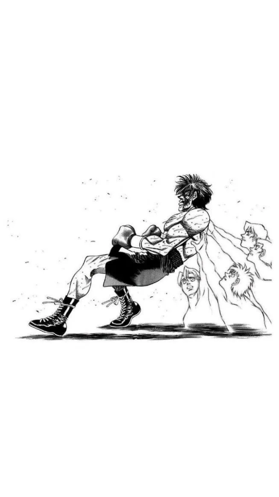

Imagem de chuva simbolizando a tristeza e o isolamento da depressão.

Personagem Rock Lee expressando cansaço extremo, como alusão ao burnout.

Imagem conceitual reflexiva usada na página index.

Imagem de representação simbólica de uma pessoa enfrentando sofrimento interno.

Imagem de frascos de remédio, remetendo ao uso de fármacos no tratamento de transtornos mentais.